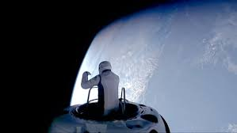
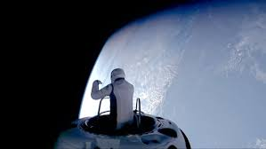
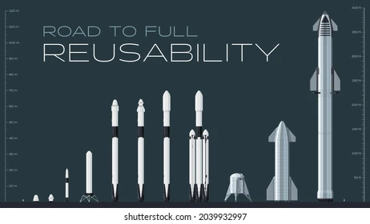
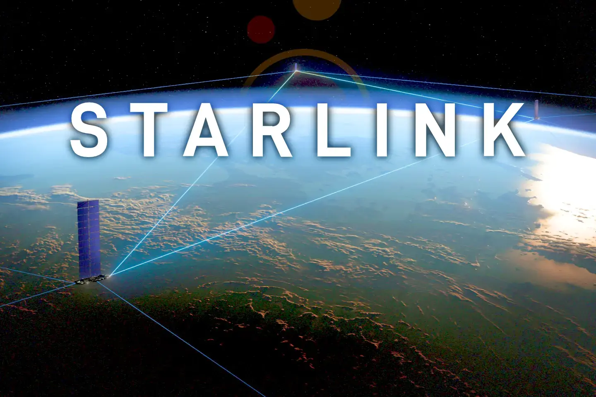

Aquí trobaràs el contingut escrit de la secció 1. Pots explicar tot el que calgui per donar context i informació.
SpaceX
En aquesta pàgina es farà un repàs de la història de la companyia SpaceX, acompanyat d’un anàlisi de l’impacte que ha tingut en el sector aeroespacial i la revolució que ha generat. Finalment, es parlarà dels coets que ha desenvolupat i que actualment està desenvolupant.
Com va sorgir?

L'impacte i la revolució de l'espai
Aquí trobaràs el contingut escrit de la secció 2. Pots ampliar la informació segons sigui necessari.
 

Coets i nous projectes
Aquí trobaràs el contingut escrit de la secció 3. Pots afegir tot el detall que vulguis aquí.

